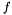
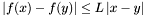
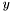
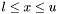
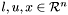
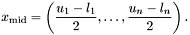
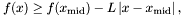
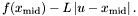

and
and 
is the objective function, then there exists a Liphshitz constant such that
such that

for all feasible and

.In general it is difficult to estimate the value of a Lipshitz constant, but if this value is known for a given application, then it can be used to compute a simple bound on the objective function. Consider a simple interval domain:

, where
Now consider the middle of this interval domain:

Then it is easy to see that

for all in the interval domain. Consequently, we can bound an interval domain with the value

templateclass serialLipshitzian : virtual public pico::branching { public: /// Setup the solver with command-line arguments and a problem object bool setup(int& argc, char**& argv, ProblemT& func_); /// Return a new, empty subproblem pico::branchSub* blankSub(); }; template class serialLipshitzianNode : virtual public pico::branchSub { public: /// The type of the branching class typedef serialLipshitzian branching_t; /// Return a pointer to the global branching object branching_t* global() const; /// Return a pointer to the base class of the global branching object pico::branching* bGlobal() const; /// Link the debugging in the subproblem to the debugging level /// set within the global branching object. REFER_DEBUG(global()); /// Initialize a subproblem using a branching object void initialize(branching_t* master); /// Initialize a subproblem as a child of a parent subproblem. void initialize(serialLipshitzianNode * parent,int whichChild); /// Initialize this subproblem to be the root of the branching tree void setRootComputation(); /// Compute the lower bound on this subproblem's value. void boundComputation(double* controlParam); /// Determine how many children will be generated and how they will be /// generated (e.g. the branching variable). int splitComputation(); /// Create a child subproblem of the current subproblem branchSub* makeChild(int whichChild); /// Returns true if this subproblem represents a feasible solution bool candidateSolution(); /// Updates the incumbent solution. void updateIncumbent(); };
The serialLipshitzian class defines core data for the optimization function, the incumbent solution and search control parameters (e.g. the Lipshitz constant. This class mostly relies on the PICO core. For example, the serialLipshitzian::setup function does some local setup and then calls branching::setup.
The serialLipshitzianNode class is derived from pico::branchSub, and which performs the core search operations: splitting a node, constructing subnodes, computing a lower bound for the current node, and updating incumbent solutions. The local data for this class includes the lower and upper bounds for the interval domain defined by each node object, the branching variable, and the branching status. This class includes both the necessary core methods, as well as a variety of methods that facilitate the interaction with the serialLipshitzian class. For example, the global data can be easilty accessed with the global() method.
templateclass parallelLipshitzianNode : public parallelBranchSub, public serialLipshitzianNode { public: /// Return a pointer to the global branching object parallelLipshitzian * global() const; /// Return a pointer to the base class of the global branching object pico::parallelBranching* pGlobal() const; /// Initialize a subproblem using a branching object void initialize(parallelLipshitzian * master); /// Initialize a subproblem as a child of a parent subproblem. void initialize(parallelLipshitzianNode * parent,int whichChild); /// Pack the information in this subproblem into a buffer void pack(utilib::PackBuffer& outBuffer); /// Unpack the information for this subproblem from a buffer void unpack(utilib::UnPackBuffer& inBuffer); /// Create a child subproblem of the current subproblem parallelBranchSub* makeParallelChild(int whichChild); }; template class parallelLipshitzian : public parallelBranching, public serialLipshitzian { public: /// Return a new subproblem pico::parallelBranchSub* blankParallelSub(); /// Pack the branching information into a buffer void pack(utilib::PackBuffer& outBuffer); /// Unpack the branching information from a buffer void unpack(utilib::UnPackBuffer& inBuffer); /// Compute the size of the buffer needed for a subproblem int spPackSize(); };
int main(int argc, char* argv[])
{
try {
/// Reset the UTILIB global timing information
InitializeTiming();
///
FunctionClass problem;
/// If we're using MPI, then initialize the MPI data structures
#if defined(USING_MPI)
uMPI::init(&argc,&argv,MPI_COMM_WORLD);
int nprocessors = uMPI::size;
if (parallel_exec_test(argc,argv,nprocessors)) {
/// Do parallel optimization if we're using more than one processor
CommonIO::begin();
CommonIO::setIOFlush(1);
parallelLipshitzian optimizer;
if (optimizer.setup(argc,argv,problem)) {
optimizer.Lipshitz_constant = 400.0;
optimizer.reset();
optimizer.solve();
}
CommonIO::end();
}
else {
#endif
/// Do serial optimization
serialLipshitzian optimizer;
if (optimizer.setup(argc,argv,problem)) {
optimizer.Lipshitz_constant = 400.0;
optimizer.reset();
optimizer.solve();
}
#if defined(USING_MPI)
}
uMPI::done();
#endif
}
/// Use a standard block of catch routines, which catches all STL exception types explicitly
STD_CATCH(;)
return 0;
}
This code relies on the definition of the class FunctionClass, which defines the objective function. For example,
the following code
defines a simple quadratic test function.
/// A simple quadratic problem
class FunctionClass
{
public:
///
FunctionClass()
{
lower.resize(3);
lower << 10.0;
upper.resize(3);
lower << 11.0;
}
///
double operator()(BasicArray& vec)
{
double ans=0.0;
for (unsigned int i=0; i lower;
/// Upper bounds on the search domain
BasicArray upper;
};
For example, if the following command is executed:
lipshitzian --absTolerance=1.0
#40033 pool=17348 inc=300.3126 bnd=292.5824 gap=2.574% #79059 pool=22076 inc=300.1172 bnd=296.7614 gap=1.118% #118317 pool=15671 inc=300.0586 bnd=298.365 gap=0.564% Best Incumbent Solution: 3 : 10.0005 10.001 10.001 Best Incumbent Value: 300.049 Subproblems ----------- Created 152609 100.0% Started Bounding 152609 100.0% Bounded 152609 100.0% Started Splitting 76304 50.0% Split 76304 50.0% Dead 0 0.0% Search Time: 39.0 seconds Total Time: 39.0 seconds